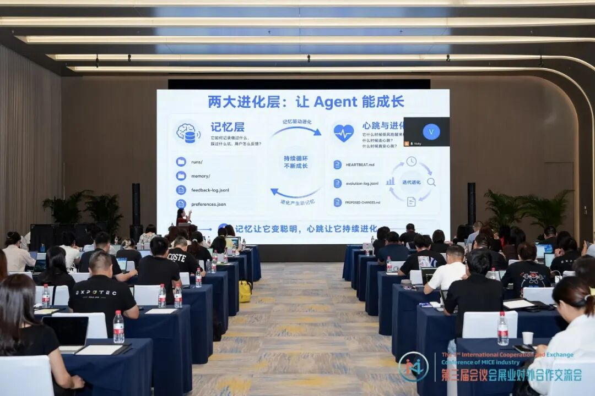
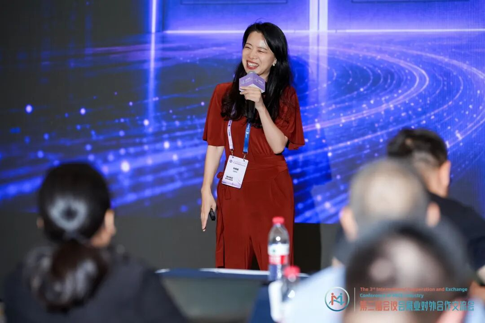
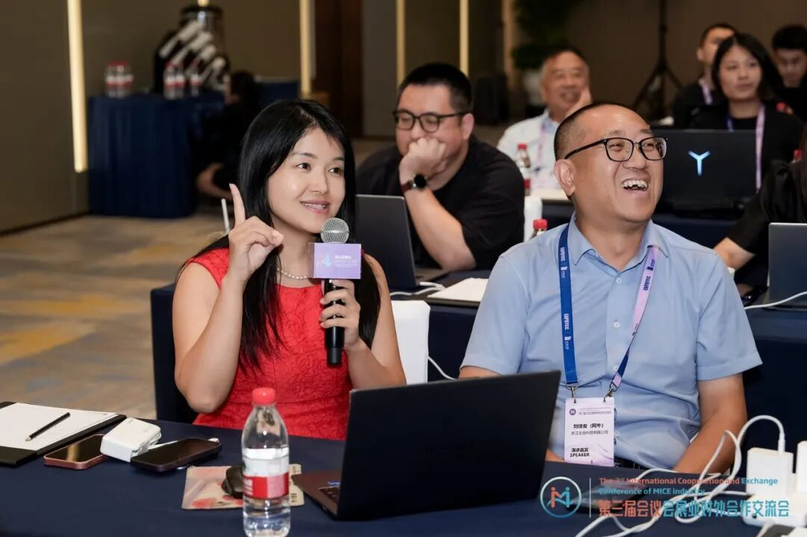
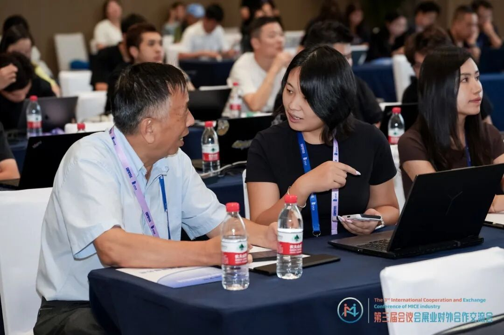

2026 年 8 月 14-15 日，第三届会议会展业对外合作交流会暨 2026 会奖会展人终身学习节在杭州国际博览中心二期举办。本次活动由杭州奥体会展文旅集团有限公司指导，以“构建会展业中国范式，传播会展业中国经验”为主题，汇聚了会展产业链各环节的从业者，围绕行业前沿趋势、实践路径与合作机遇展开交流。8 月 15 日下午，SENSE AI 创始人张佩晶主讲三小时 AI 工作坊，使用 WorkBuddy 带学员从零搭建 AI 智能体与 Skill，并把业务想法转化为可运行成果。
- 活动名称：第三届会议会展业对外合作交流会暨 2026 会奖会展人终身学习节
- 时间地点：2026 年 8 月 14-15 日，杭州国际博览中心二期 · 五楼博览厅 C
- 指导单位：杭州奥体会展文旅集团有限公司
- SENSE AI 参与：8 月 15 日下午“AI 工作坊·动手实操”主讲
- 工作坊工具：WorkBuddy（本次工作坊使用的 AI 工作工具）
使用 WorkBuddy，从零搭建 AI 智能体与 Skill
如果说大会上午的主题分享是“输入”，那么下午的 AI 工作坊就是最硬核的“输出”时刻。张佩晶把舞台交给工具，带与会嘉宾上手 WorkBuddy，亲自演示如何把业务需求拆解为可执行的智能体任务。工作坊的目标非常直接：来的时候不会，走的时候手里有一个能用的。
现场一位学习嘉宾仅用 30 分钟，就从零跑通了一个“报名活动”智能体，成果当场投屏展示——前端页面、后端逻辑、完整可用的功能一气呵成。从报名系统到玄学、股票、学习节官网，一个工具全搞定，瞬间点燃全场。台下嘉宾围绕实现细节与落地场景讨论得热火朝天。
这或许正是终身学习节想传递的：工具不在远方，就在你打开它的那一刻。


会展行业的 AI 落地：从单次提效到可复用系统
在会展这样项目周期紧、不确定性高、熬夜出差频繁的行业，AI 的价值不能只停留在“生成一段文案”或“做一个 PPT”。张佩晶在工作坊中反复强调，真正改变企业经营方式的，是把经验拆解成输入资料、执行步骤、输出标准和复盘指标，再固化成可被团队调用、交接和持续优化的 AI Agent 工作流。
这也是 SENSE AI 在企业 AI 培训与 AI 落地陪跑中的核心方法：先回到业务现场，判断哪些任务最高频、最耗时、最影响增长，再用 AI 把它们变成可复用的系统能力。对于会展和活动公司来说，从观众导览、买家匹配、招商辅助到展后复盘，每个环节都可以被重新设计成智能体任务。

终身学习的状态，才是最稳的底盘
为期两天的大会在热烈的氛围中落幕。活动期间，邵玲玲副局长、孙俊主任、IAEE 总裁兼首席执行官费雯歆通过致辞或视频为大会送上祝福与洞察；陈涛、蒋亮亮、冀国庆、阿牛等嘉宾分别从心理学、学术会议服务联盟、AI 同传翻译、会展新媒体与 GEO 等角度带来主题分享。产业链生态合作伙伴展示区也汇聚了汇展科技、杭州国博、古合文化、喔图、租达人、万法 AI、浩洋文化等七家企业。
对 SENSE AI 而言，这场工作坊再次验证了企业 AI 培训的关键：不是讲更多概念，而是让参与者在真实工具中完成真实任务，带走可继续使用的成果。工具会迭代，但终身学习的状态，才是最稳的底盘。
常见问题
公开来源
公开报道：圆满收官｜两天议程，干货满满——感谢每一位爱学习的小伙伴（汇展科技微信公众号）。